A robot which can autonomously collect pipes and can be controlled to build a pipeline.
This is a robot whose purpose is to build a pipeline in two stages:
Autonomous Pipe Collection
The robot is capable of supplying pipes autonomously collecting pipes from a vertical stand and then tracing a line from which it will replace the pipes in a pipe cradle.
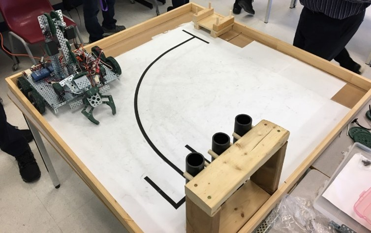Remote Controlled Pipeline Creation
Once pipes have autonomously been supplied, a user is able to control the robot and then create a pipeline by using a remote control to pilot the robot and its features.
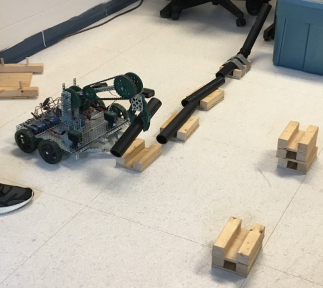Sketch
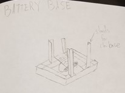A platform consisting the VEX controller and a battery to power the entire machine.
It was initially devised to separate the controller and battery from the bottom floor as it could have prevented the wooden blocks from passing underneath the robot
Computer Aided Design
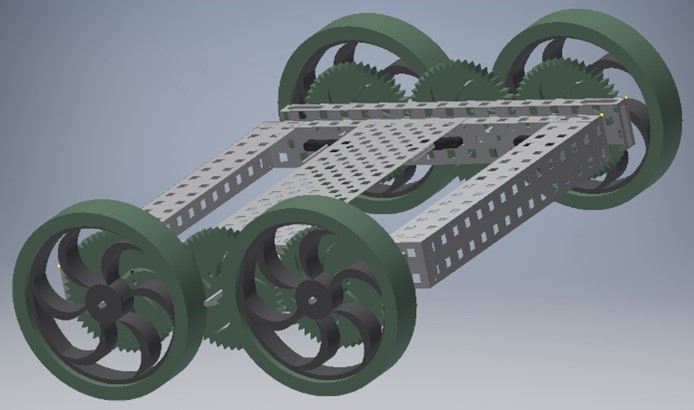The design of this chassis was very simplistic at first to set up a sturdy battery base which was portable.
Physical Implementation
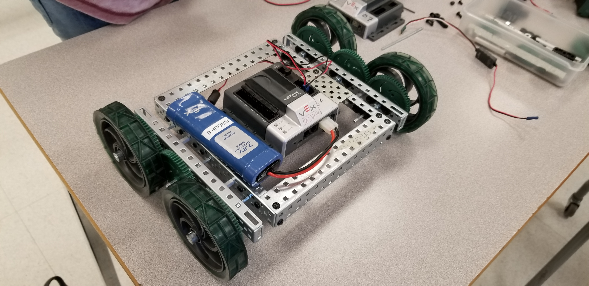Closely following the CAD design the battery base was constructed.
Sketch
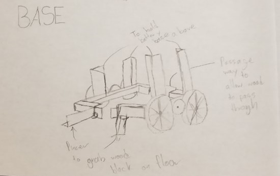A multipurpose platform which would be the robot's chassis and act as an intake system.
This intake system would consist of pincers that would grab the wood blocks and then release them when they would be in the right position.
After that the VEX unit would release the block and pass over it, using a guide rail in the center and the pincers, the user would be able to easily align and separate the wooden blocks efficiently.
Physical Implementation
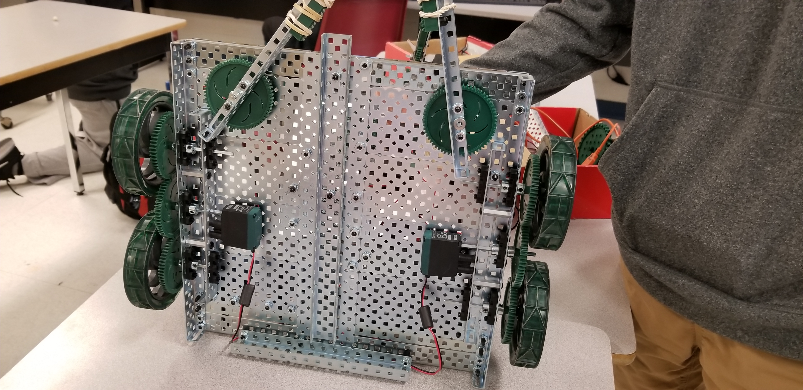Once physical implementation began, it became evident that the base platform could be merged with the battery base.
Completed Base
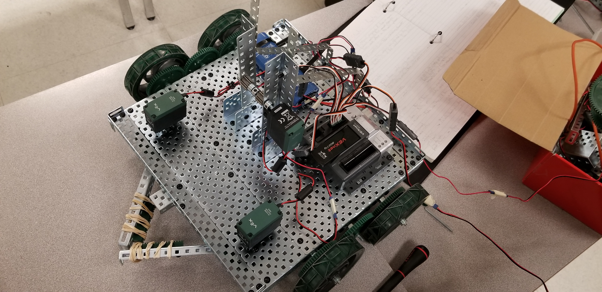After a few tests, to improve claw grip rubber bands were added, the base was expanded and stands were placed to accomodate for the claw.
Sketch
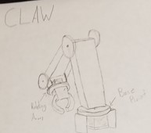The final component which would consist of the robot’s main arm.
This arm would be versatile allowing it to easily grab pipes and blocks from an elevated platform, and then be able to place an object from any angle at any height.
Computer Aided Design
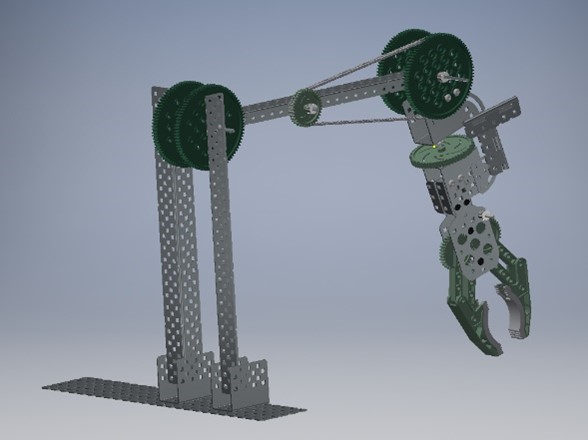The design of this claw was constructed in a matter where the claw had access to 90 degrees of rotational freedom, while the main arm would have access to 360 degrees of freedom along the base and 180 degrees of freedom along the top.
Physical Implementation
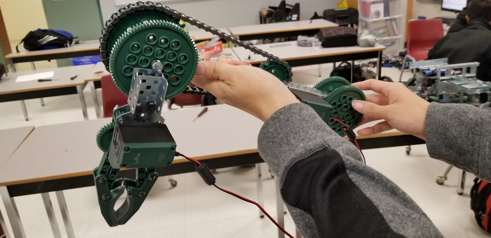Closely following the CAD design the battery base was constructed.
Sketch
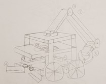The final complete sketch of all components and their combination as a final product.
Computer Aided Design
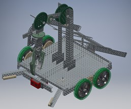A complete CAD design of the robot.
Physical Implementation
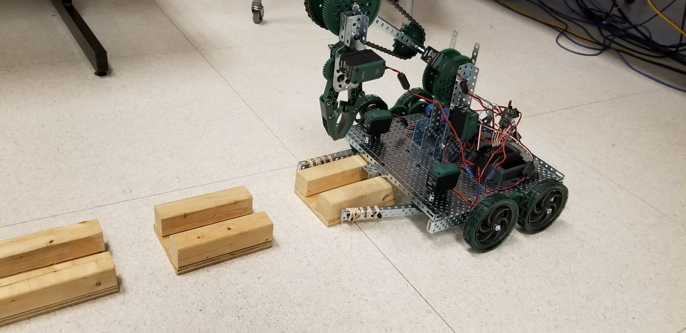Final constructed product.